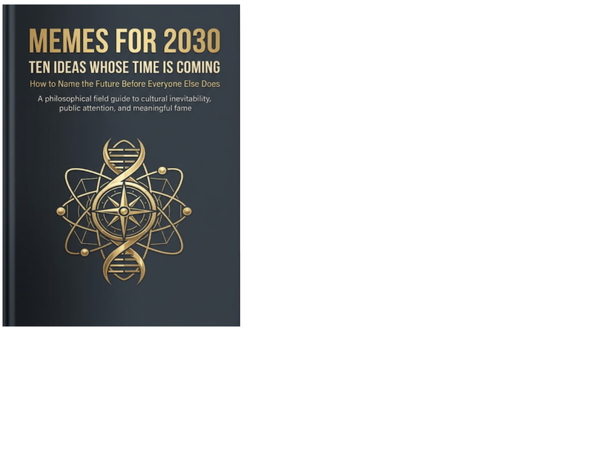

Cultural philosophy · Axiologic Research Editions
Memes for 2030
Ten Ideas Whose Time Is Coming
Before an age has a politics, it often has a phrase that people repeat because it names the pressure in the room.
A forecast made of names, not dates
Memes for 2030 does not forecast markets, elections or products. It examines a different kind of anticipation: the cultural sentence that appears when a pressure has become widely felt but is not yet easily said. “An idea whose time has come” is treated here as a social event. It succeeds when history, technological change, private anxiety and a memorable formulation begin pulling in the same direction.
The ten chapters are proposals for that vocabulary: humanity is not a bug; reality is the new luxury; intelligence is a birthright; enough is the new more; community is infrastructure; maintenance is heroism; become a good ancestor; Earth is the first country; unavailability is freedom; fame is a public office. They are not commandments, and the book is more interesting when read as a test of which phrases clarify a condition and which merely flatter a reader’s hopes.
Ten phrases looking for a century
How do ideas become inevitable? The introduction refuses the fantasy that a clever slogan manufactures history by itself. A meme needs compression and emotional force, but it also needs a world ready to receive it. The book looks for the meeting point between technological abundance, ecological limits, attention fatigue and the longing for forms of dignity that cannot be purchased or automated.
What comes after optimisation? Several chapters turn familiar status hierarchies inside out. Reality becomes precious in an era of synthetic media; maintenance becomes heroic when systems are large and fragile; “enough” challenges the reflex that more growth, access and visibility always equal a better life. These are invitations to inspect values, not claims that scarcity or withdrawal are automatically virtuous.
What is fame for? The final movement treats attention as delegated power. To be known is not simply to win an audience; it is to acquire an office in public imagination. The question is whether that office can be used to make language, institutions or obligations more livable, or only to occupy the room.
A useful meme does not merely travel; it gives people a way to recognise the pressure already shaping their lives.
The sentence before the movement
The book has the energy of a manifesto but is best read with a pencil, not as scripture. Its strength is its willingness to make broad propositions vivid and to link cultural slogans with concrete conditions: AI-generated abundance, climate responsibility, loneliness, burnout and the politics of attention. Its risk, also acknowledged by its form, is that a memorable sentence can outrun evidence.
Writers, community builders and cultural workers may find here better words for a decade saturated with synthetic content. Half the ten ideas may deserve refusal. The useful question is which one makes a previously invisible choice visible.